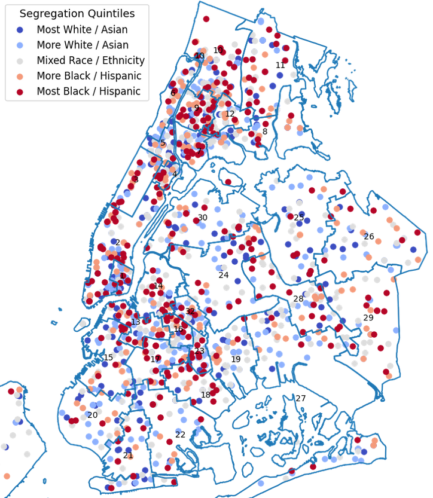

New York Schools Open Data Project
The mission of the NYC Schools Open Data Project is to make open data regarding public schools in New York available to everyone interested in improving our schools, regardless of their technical background or familiarity with data analysis. We believe that fighting for educational equity requires us to broaden the audience of who can use and analyze data. Accordingly, we want to make educational data more accessible, train people to use it, and demystify and remove the barriers to access.
Our goal is to build platform where any motivated individual or groups can evaluate available school data, interpret it to help understand issues they care about, and employ data as part of larger arguments in our conversations about schools in New York.